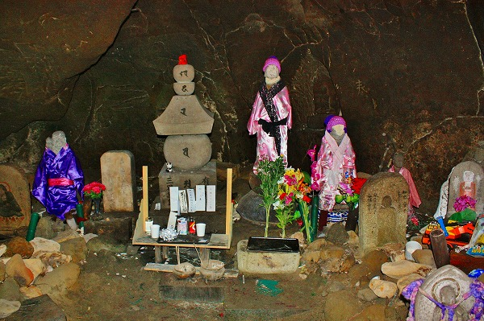
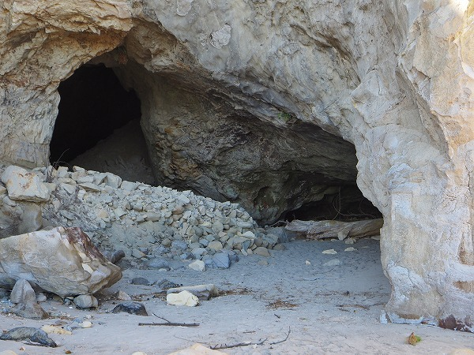

実は当サイトではこの項目が長い間リンク切れになっていた。
原因は数年前、偶々サーバー移行の際にリンクが切れてしまっていたのだが、この項以外は去年までに全部復旧させていた。
（もし他にもリンク切れがあったら是非ご報告くださいませ）
しかしこの項だけは復旧を躊躇っていたのだ。
というのも、東日本大震災の際にここが大きな被害を受けたというニュースを目にしていたので、それ以前のレポートを何もなかったかのように掲載するのはあまりにも不親切だろう、という判断が働いたからだ。
長い間どうしようかと考えていたのだが、この度15年ぶりに再訪して現在の様子が判明したので、震災前の様子と震災後の様子を併せてご覧いただくことで改めてこの項を復帰させていただくことを先にお断りしておく。
…というわけで、まずは震災前、2007年の様子を。
福島県いわき市の海沿いにある賽の河原は海蝕洞窟の中にある水子霊場だ。
海からやや離れた場所に賽の河原の案内と幾つかの石碑が建っている。
この道を下って行くと沼の内港という小さな港に出る。
その片隅に賽の河原の入口はある。
崖の下にぽっかりと穴が空いているのがお判りいただけるだろうか？
その中に賽の河原霊場があるのだ。
一見凄く地味だが、ここから賽の河原が始まる。
階段を数段下りると石像が幾つか見えてくる。
賽の河原、というだけに子供の供養のための石像ばかりだ。
しばらく進むと突然大きな空間がある。
そこには雛壇状に並んだ地蔵が大量に並んでいる。
ここは古くから霊場として人々の信仰を集めていた。
そこに昭和60年に地元の石材店がこの地蔵群を建立したのだ。
薄暗い洞窟の中で整然と並んだ地蔵群は得も言えぬ迫力がある。
地蔵群の先からは光が差し込んでいる。
その先は海岸になっている。
地蔵群の向かいにはガンプラが置かれていた。
幼くして亡くなった子供のために奉納されたものだろう。
後ろにビニール袋が置かれていた。
中には真っ黒な「何か」がパンパンに入っていた。
コレは何だろう？
もちろん幼子の供養のために奉納された「何か」なのだろうが、色々想像を巡らせてみたが、全く判らなかった。
それ以上にあまり詮索すべきではない、という直感のようなものが働いたので色々と想像するするのは止めときます…。
砂に埋もれかかった人形。
一見、マジで赤ちゃんが埋まってるのかと思って腰を抜かしそうになったよ。
海側から見た地蔵群。
この洞窟の高さは30メートル程あろうか。
かなり広い空間だ。
一旦、海側に出て、振り返るともうひとつ洞窟があった。
こちらは先程の巨大な洞窟とは違い、高さもあまりなく、こじんまりした印象だがこちらにもたくさんの石仏や石塔が点在していた。
印象的なのは散乱した供物。
人形や玩具、お菓子などがそこらじゅうに散らかっていた。
恐らく、高波や台風などの時にこの洞窟内に波が入り込み、これらの供物を攪拌してこのような姿になったのだろう。

洞窟の一番奥には五輪塔や地蔵が並んでいた。
想像するに、先程の雛壇状に地蔵が並んでいたエリアよりもこちらの洞窟の方が霊場としては古いのではなかろうか。
置かれている石仏も古い物が多いし、何より奉納物が圧倒的にこちらの方が多い。
誰もいない洞窟で独りこれらの奉納物と対峙していると、亡き子に対する想いが重くのしかかかってくるような気がする。
手向けられた花はほとんど造花だった。
洞窟を出るとすぐそばに穏やかな浜がある。
洞窟の入口にはイタズラしないように、との紙が置かれていた。
再び洞窟の中へ。
普段は穏やかな海だが、高波や台風が来たら岩などが押し上げあられるのだろう。
そんな岩を寄せて通路を造っているのが判る。
確かに人の住む世とあの世の境目のような不思議な場所だった。
また黒いビニール袋があった。
一体何なのだろう？
時は流れて2024年。
2011年の東日本大震災ではこの地区も甚大な被害を受けたという。
近くにあるいわき震災伝承みらい館にはその被害の様子が展示されていた。
ちなみにここは福島第一原発から30㎞足らずの場所にある。
霊場の石碑。
結論から言うとここだけが震災前と何ら変わりなかった。
かつて訪れた海蝕洞窟内の霊場は震災の津波によりほぼ壊滅的な状況に陥ったと様々なニュースで聞いた。
正直言ってここに来るのも結構辛かった。
本当はもっと早く訪れたかったのだが、個人的に思い入れのあったこの場所を訪れるのにはそれなりの覚悟が必要だったことは斟酌して下さい。
ニュースによると賽の河原霊場にあった石像の多くは津波で流されてしまった。
しかし残された石像は努力のかいあって洞窟の上にある高台に移転されている事が判明した。
港に下りる道の途中にそれはあった。
かつて、洞窟の中にあった石像がボランティアなどの手により掘り起こされここに移転したのである。
場所は霊場の入口があった崖の真上に位置する。
かつての海蝕洞窟の中の賽の河原とは全く違う、明るいオープンな場所で石像群は第二の人生を歩んでいる。
地蔵の前には小石が積まれていた。
やはり賽の河原霊場だけに石を積んでしまうのだろう。
古い石像は震災の荒波なのか自然の風化なのか、摩滅して消えてしまいそうになっていた。
かつては入口にあった石像か。
この石碑は入口にあった。憶えている。
眼下には沼ノ内の漁港が見下ろせる。
その向こうは静かな、静かな太平洋が広がっていた。
たくさんの石が積まれている。
この場所の石なのか、それともわざわざ海岸から拾ってきたのか。
かつて雛壇状に並んでいた石像。
これらの石像のほとんどは海側から来た津波によって沼ノ内港側に押し出されてようだ。
もちろん引き波によって海に引きずり込まれた石像もあっただろう。
それでもこれだけの数の石像が生き残ってこの場所に祀られ直されたのは奇跡と言えるのではなかろうか。
いかにこの賽の河原が地元の方々に大事にされていたのかが痛いほど判る光景であった。
で、賽の河原霊場の現状がどうなっているかも確認してみようと思い、かつての霊場の入口にやってきた。
入口付近もやや寂れてしまった印象はある。
ただし入口が塞がれている風ではないようなので中に入ってみる。
当然だが、中に入っても石像のひとつもない。
判り切っていたことだが、寂しい思いは否めない。
さらに進むとかつて地蔵が並んでいた雛壇の一部が見えてきた。
その変わりようには驚くというより唖然とした。
あれだけ広大だった洞窟の半分近くが埋まっていたのだ。
しかも砂、ではなく岩によって、である。
中には4～5メートルもあろうかという岩がこの洞窟に流れ込んできたのが確認できる。
私は舐めていた。
こんなに巨大な岩が水の力によって流されてくるなんて想像だにしていなかったのだ。
これまで数限りない津波の映像をニュースなどで見て、その破壊力は理解したつもりだった。
しかしこうして目の前に流れてきた巨岩を目の当たりにするとそのパワーはとんでもないものだという事を身をもって実感したのだ。
どんな映像よりも、どんな展示よりも。
折り重なる岩を何とか乗り越え海側に出る。
ここにも地蔵が並んでいた雛壇の跡がある。
その先には海が見えた。
かつて玩具や人形が散乱していたもうひとつの霊場にも行ってみる。
もちろんかつてあった石塔や石像はひとつ残らず無くなっていた。
しかし、そこには千羽鶴がぶらりと下がっていた。
更にかつて石像が安置されていたであろう岩壁の窪みにはわずかな人形と玩具と造花が手向けられていた。
もちろんこれは震災後に奉納されたものだ。
つまりこれを奉納した人はあの折り重なった岩石の山を乗り越え、小さな人形を、花を、玩具を供えるためにわざわざここまで来たのである。
その信仰への原動力は一体何なのか、を考えてしまう。
この地でも津波で多くの方々が亡くなった。
その中にはもちろん子供もいた事だろう。
そんなやりきれない出来事を少しでも癒すためにここに奉納しに来たのではないだろうか？
あまり想像だけでモノを言うのも失礼だが、それなりの強い想いはあるはずだ。
でなければあの岩を登ろうという気持ちにはならないのではなかろうか。
考えてみたら洞窟の真上にある現在の地蔵が並んでいる場所には人形や玩具は奉納されていなかった。
あくまでも、信仰の本質はこの洞窟という場にある、という人々の直感が人々をこの洞窟に足を運ばせるのだろう。
海岸に出てみる。
かつては砂浜だったところが岩でガチガチに護岸されていた。

振り向けば洞窟の手前にも大量の岩が押し寄せていた。
再び外に出てみる。
入口の崖の上にわずかだが観音像の頭が見える。
こうして数百年続いた信仰はかたちを変え、姿を変えつつもなくなることはなく人々の心に継承されていくのであろう。
賽の河原のもうひとつ南の海岸。
恐ろしいほど静かな海だった。